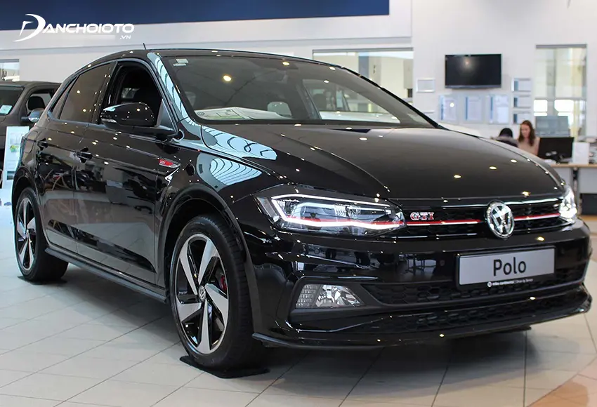

Giá xe Volkswagen Polo (4 chỗ)
Volkswagen Polo là một mẫu xe thuộc phân khúc hạng B cao cấp, cạnh tranh với các đối thủ Toyota Yaris, Mazda 2, Honda City, Toyota Vios… Xe có 2 phiên bản sedan và hatchback. Volkswagen Polo về Việt Nam dưới hình thức nhập khẩu nguyên chiếc từ Ấn Độ. Dưới nắp capo Volkswagen Polo là khối động cơ 1.6L sản sinh công suất cực đại 105 mã lực, mô men xoắn cực đại 153 Nm, đi cùng hộp số tự động 6 cấp.

Thiết kế Volkswagen Polo hướng đến là một mẫu xe 4 chỗ đô thị nhỏ gọn, năng động và linh hoạt. Tuy nhiên so với các đối thủ, ngoài yếu tố thương hiệu xuất xứ, những phương diện còn lại của Polo chưa có nhiều điểm nổi bật.
Giá xe Volkswagen Passat (4 chỗ)
Volkswagen Passat là một mẫu xe thuộc phân khúc sedan hạng trung cao cấp, tiệm cận hạng sang, có giá bán cạnh tranh với các xe Toyota Camry, Honda Accord, Mazda 6, VinFast LUX A2.0… Xe về Việt Nam dưới hình thức nhập khẩu nguyên chiếc. Về thông số kỹ thuật, Volkswagen Passat sử dụng khối động cơ tăng áp 1.8L sản sinh công suất cực đại 177 mã lực, mô men xoắn cực đại 250 Nm. Xe dùng hộp số ly hợp kép DSG 7 cấp..
Volkswagen Passat là một trong những mẫu xe lâu đời nhất của Volkswagen, cũng là mẫu xe góp phần làm nên tên tuổi của hãng xe Đức này. Trong lần nâng cấp mới nhất, Passat được bổ sung khá nhiều trang bị. Ở Việt Nam, Volkswagen Passat nằm ở vị trí khá “lơ lửng” khi có giá “nhỉnh” hơn Toyota Camry và Honda Accord khá ít, đồng thời thấp hơn xe sang Mercedes C180 không nhiều. Điều này khiến Passat hơi bị “kén” khách mua.